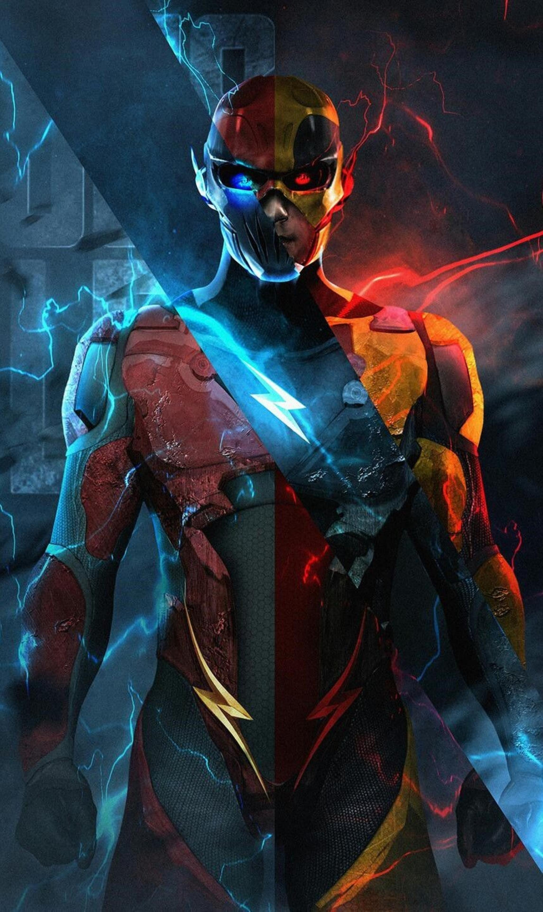

| Series | Movie | Series |
|---|---|---|
| Re:Zero | I want to eat your Pancreas | Demon Slayer |
| Best Love & Dark fantasy | Best Cry making Movie (better sweet love) | Best broter & Sister Love |
Introduction:
Hi Eeveryone WELCOME To My Website
This is LOKESH.This is my own website
Here in this website i'm gonna show you how to create a website,showing different tags and (CSS).
TOPIC:Html,CSS,JavaScript Learning
These topics are belongs to "Frontend" Where the changes can be seen by the users
1.(HTML):Hyper Text Markup Language
HTML is the standard markup language for creating web pages and web applications.
2.(CSS):Cascading Style Sheets
CSS is nothing but changing the style and colour of the text and backgroung.
3.JavaScript:
JavaScript is an object-oriented computer programming language commonly used to create interactive effects within web browsers.
Thank U Soo Much:)
I will be back again with new concepts.BYEeee
Google's Home Page A really awesom pic